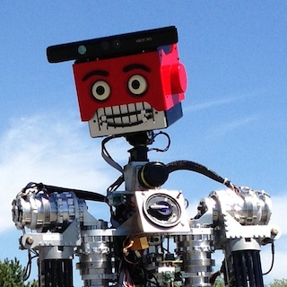

François Ferland
Postdoctoral researcher, ENSTA-ParisTech
I am a researcher in robotics currently doing a post-doc at the Robotics and Computer Vision Lab of ENSTA-ParisTech under the supervision of Pr. Adriana Tapus. My main interest is the development of natural interaction modalities and expressive behaviors for autonomous robots.
You can contact me by e-mail.
Past Projects
Between 2009 and 2014, I was a full-time PhD student supervized by Pr. François Michaud at Université de Sherbrooke in Québec, Canada. Our laboratory, IntRoLab, is part of the 3IT. The bulk of my work has been in the integration various software components in a single, coherent architecture for IRL-1, our wheeled humanoid robot. I did my Master's at the same laboratory, working on user interfaces for telepresence robots, which is detailed in my HRI 2009 paper.

In Spring 2014, I did a short internship at ENSTA-ParisTech. I worked on adaptative expressive behaviors for autonomous robots such as the Meka M-1. I notably participated to an experiment on motion-oriented attention which was presented at ICSR in October 2014.
In March 2013, I visited Willow Garage in Menlo Park, California for a few days. We integrated ManyEars, the sound localization and tracking system from our lab in Sherbrooke on a PR2, which lead to this video. You can learn more about 8-Sounds, the open hardware project behind it, at its SourceForge page.
Publications
- Ferland, F., Reveleau, A., Michaud, F. (2015) "Visualization of Sound Source Location in a Teleoperation Interface for a Mobile Robot". Proceedings of the 2015 International Conference on Human-Robot Interaction, late-breaking abstract, Portland, OR. ACM
- Ferland F. (2014) "Conception d'un Mécanisme Intégré d'Attention Sélective dans une Architecture Comportementale pour Robots autonomes". Ph. D. Thesis, Université de Sherbrooke. UdeS
- Ferland, F., Leconte, F., Tapus, A., Michaud, F. (2014) "An Architecture with Integrated Episodic Memory for Adaptative Robot Behavior". AAAI Fall Symposium on AI in HRI, Arlington, VA. AAAI
- Sorostinean, M., Ferland, F., Dang, T.-H. H., and Tapus, A. (2014) "Motion-oriented Attention for a Social Gaze Robot Behavior", Proceedings of the 6th International Conference on Social Robotics, Sydney, AU. Springer
- Leconte, F., Ferland, F., and Michaud, F. (2014) "Fusion Adaptative Resonance Theory Networks Used as Episodic Memory for an Autonomous Robot", Proceedings of the Conference on Artificial General Intelligence, Québec, Canada, pp. 63-72. Springer
- Chauvin, R., Hamel, M., Brière, S., Ferland, F., Grondin, F., Létourneau, D., Tousignant, M. et Michaud, F. (2014) "Contact-Free Respiration Rate Monitoring Using a Pan-Tilt Thermal Camera for Stationary Bike Telerehabilitation Sessions", IEEE Systems Journal, (In press). IEEE
- Chauvin, R., Ferland, F., Létourneau, D., and Michaud, F. (2014) "ROS4iOS: Native ROS Development on iOS Devices", Proceedings of the IEEE International Conference on Robotics and Automation", Hong Kong, p. 2085.
- Ferland, F., Chauvin, R., Létourneau, D., and Michaud, F. (2014) "Hello Robot, Can You Come Here? Using ROS4iOS to Provide Remote Perceptual Capabilities for Visual Location, Speech, and Speaker Recognition", Proceedings of the 2014 ACM/IEEE International Conference on Human-Robot Interaction, Bielefeld, DE, p. 101. ACM
- Ferland, F., and Michaud, F. (2014) "An Architecture for Integrated Design of Human-Robot Interaction Capabilities", HRI 2014 Workshop on Cognitive Architectures, Bielefeld, DE. PDF
- Frémy, J., Ferland, F., Lauria, M., and Michaud, F. (2014) "Force-Guidance of a Compliant Omnidirectional Non-Holonomic Platform", Robotics and Autonomous Systems, 62 (4), pp. 579-590. Elsevier
- Rousseau, V., Ferland, F., Létourneau, D., and Michaud, F. (2013) "Sorry to Interrupt, but May I Have your Attention? Preliminary Design and Evaluation of Autonomous Engagement in HRI", Journal of Human-Robot Interaction, 2 (3), pp. 41-61. JHRI
- Ferland, F., Aumont, A., Létourneau, D., and Michaud, F. (2013) "Taking Your Robot for a Walk: Force-Guiding a Mobile Robot Using Compliant Arms", Proceedings of the 8th ACM/IEEE International Conference on Human-Robot Interaction, Tokyo, JP, pp. 309-316. IEEE
- Grondin, F., Létourneau, D., Ferland, F., and Michaud, F. (2013) "An Open Hardware and Software Microphone Array System for Robotic Applications", HRI 2013 Demonstration session, Tokyo, JP.
- Grondin, F., Létourneau, D., Ferland, F., Rousseau, V., and Michaud, F. (2013) "The ManyEars Open Framework" Autonomous Robots, 34, pp. 217-232. Springer
- Ferland, F., Létourneau, D., Aumont, A., Frémy, J., Legault, M.-A., Lauria, M., and Michaud, F. (2012) "Natural Interaction Design of a Humanoid Robot", Journal of Human-Robot Interaction, 1 (2), pp. 118-134. JHRI
- Ferland, F., Aumont, A., Létourneau, D., Legault, M.-A., and Michaud, F. (2012) "Johnny-0, a Compliant, Force-Controlled and Interactive Humanoid Autonomous Robot", Proceedings of the 7th ACM/IEEE International Conference on Human-Robot Interaction, Boston, MA, pp 417-418. ACM
- Ferland, F., Clavien, L., Frémy, J., Létourneau, D., Michaud, F., and Lauria, M. (2010) "Teleoperation of AZIMUT-3, an Omnidirectional Non-Holonomic Platform with Steerable Wheels", Proceedings of the IEEE/RSJ International Conference on Intelligent Robots and Systems, Taipei, TW, pp. 2515-2516. IEEE
- Frémy, J., Ferland, F., Clavien, L., Létourneau, D., Michaud, F., and Lauria, M. (2010) "Force-Controlled Motion of a Mobile Platform", Proceedings of the IEEE/RSJ International Conference on Intelligent Robots and Systems, Taipei, TW, pp. 2517-2518. IEEE
- Michaud, F., Ferland, F., Létourneau, D., Legault, M.-A., and Lauria, M. (2010) "Toward Autonomous, Compliant, Omnidirectional Humanoid Robots for Natural Interaction in Real Life Settings", Paladyn Behavioral Robotic Journal, 1 (1), pp. 57-65. Springer
- Michaud, F., Boissy, P., Labonté, D., Brière, S., Perrault, K., Corriveau, H., Grant, A., Cloutier, R., Roux, M.-A., Iannuzzi, D., Royer, M.-P., Ferland, F., Pomerleau, F., and Lauria, M. (2010) "Exploratory Design and Evaluation of a Homecare Teleassistive Mobile Robotic System", Mechatronics, Special Issue on Design and Control Methodology in Telerobotics, 20, pp. 751-766. Elsevier
- Pomerleau, F., Colas, F., Ferland, F., and Michaud, F. (2009) "Kd-ICP for Fast and Robust Map Registration", Proceedings of the 7th International Conference on Field and Service Robotics, Cambridge, MA, pp. 229-238. Springer
- Ferland, F., Pomerleau, F., Le Dinh, C. T., and Michaud, F. (2009) "Egocentric and Exocentric Teleoperation Interface Using Real-Time, 3D Video Projection", Proceedings of the 4th ACM/IEEE International Conference on Human-Robot Interaction, La Jolla, CA, pp. 37-44. ACM
- Ferland F. (2009) "Interfaces Graphiques Tridimensionnelles de Téléopération de Plateformes Robotiques Mobiles", Master's Thesis, Université de Sherbrooke. UdeS